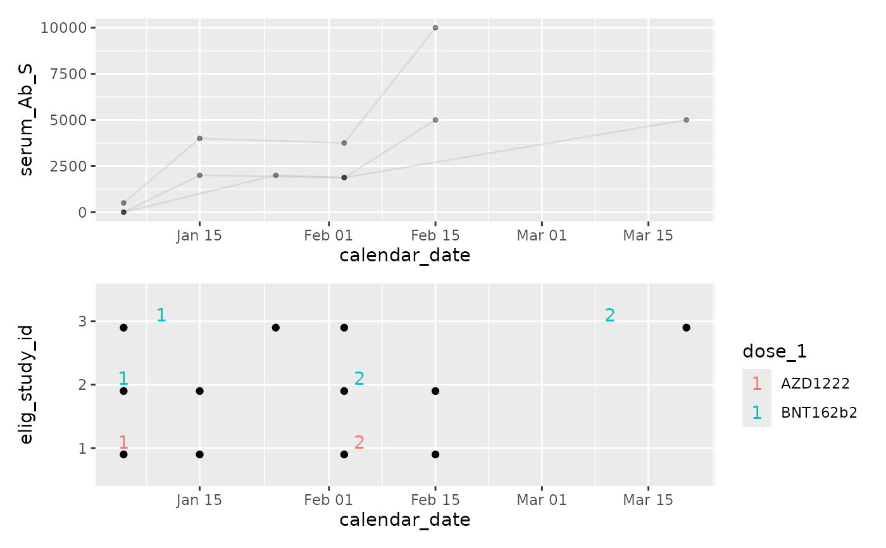
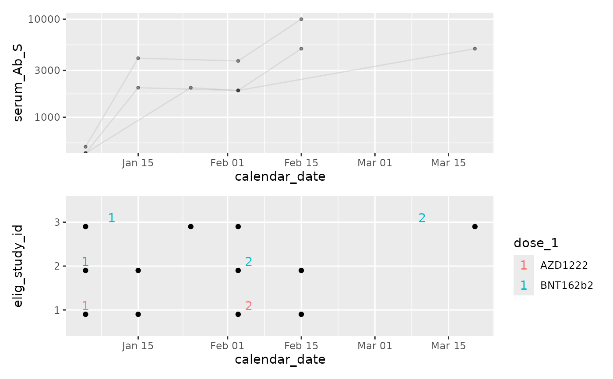

cg_plot
cg_plot.RdCreate a ggplot2 object, plotting a
user-defined y axis over time.
ggplot2 objects retain the entirety of the provided dataset.
This allows later adjustments, such as adding extra geom_layers
with new information, or applying facets. To find this data
examine obj$data. If you save ggplot2 objects, all source
data is ALSO saved. cg_plot() removes any un-used data by
default (drop_vars=TRUE). In writing a study specific
ggplot2, it is best practice to select minimal columns before
calling ggplot().
Usage
cg_plot(
cg,
x = NULL,
y_values,
drop_vars = TRUE,
point_alpha = 0.4,
point_shape = 20,
link_obs = TRUE,
link_colour = "grey",
link_alpha = 0.4,
...
)Arguments
- cg
chronogram
- x
a column of time to use as x axis. If NULL, will default to the chronogram's calendar date attribute. A user may want to derive and use alternatives eg 'daysSinceDose2'.
- y_values
column within chronogram containing the data you wish to plot.
- drop_vars
Default TRUE. See description.
- point_alpha
alpha for
geom_point().- point_shape
shape for
geom_point().- link_obs
Default TRUE. Draw a line to link results from same individual?
- link_colour
colour for
geom_line()- link_alpha
alpha for
geom_line()- ...
passed to
aes()
Examples
library(ggplot2)
library(patchwork)
data("built_smallstudy")
cg <- built_smallstudy$chronogram
p1 <- cg_plot_meta(cg,
visit = serum_Ab_S
)
#> Function provided to illustrate chronogram ->
#> ggplot2 interface.
#> Function assumes the
#> presence of {dose_1, date_dose_1, dose_2, date_dose_2}
#> columns.
#> Users are likely to want to write their own,
#> study-specific applications
p2 <- cg_plot(cg,
y_values = serum_Ab_S
)
#> Function provided to illustrate chronogram ->
#> ggplot2 interface.
#> Users are likely to want to write their own,
#> study-specific applications
p2 / p1

(p2 + scale_y_log10()) / p1
#> Warning: log-10 transformation introduced infinite values.
#> Warning: log-10 transformation introduced infinite values.
